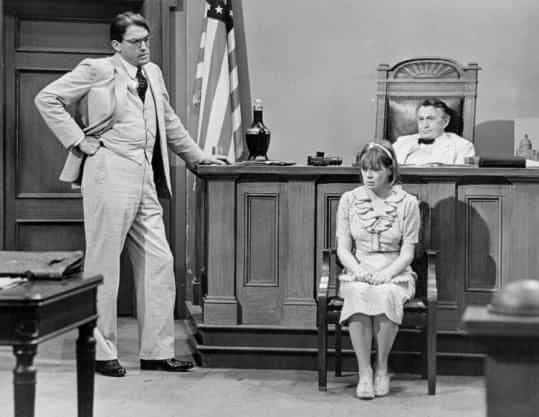
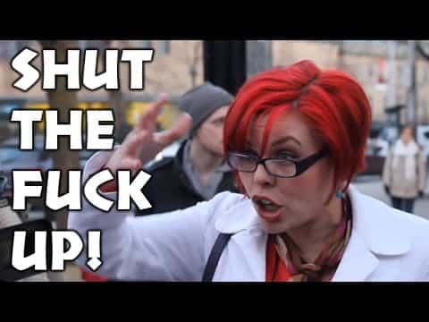

< < < Back
Tone Deaf Leftists Lavish Praise On Book That Features A Man Falsely Accused Of Rape – Return Of Kings
The death only days ago of To Kill A Mockingbird author Harper Lee produced fusillades of praise from the militant celebrity left. The centerpiece of their commemorations was her flagship book about a white Southern lawyer tasked with defending a black man accused of rape with no evidence. However, these same public figures are always the first to jump on the “rape culture” bandwagon, immediately equating female accusers with victims and males accused with rapists.
“Listen and believe” has for them become an ardent ideology, not a platitude to be given mere attention, a travesty recently reaffirmed in the deplorable Souad Faress’ false rape fantasy. How does this gel with To Kill a Mockingbird, which is a direct indictment of mob antics and thinking?
Sadly, at the same time they were applauding Lee, celebrities were publicly calling singer Kesha a rape victim and her producer Dr. Luke an abuser/rapist. Whether they called Dr. Luke a rapist by actual name is immaterial. Hedging one’s bets slightly for legal reasons so you can still slander a man society has already hit to the ground remains inexcusable. The worst offender, by far, was attention-deprived former Charmed actress Rose McGowan. She thought that #FreeKesha was too “weak” and opted for the conspiracy theory patriarchal superstructures line:
Strangely enough, earlier on that same day she was full of praise for Harper Lee and her book:
A good book, just one twisted to suit SJWs

“Atticus Finch is a monster! He cross-examined a girl who said she was raped! Listen and believe!”
I can imagine the politics of Harper Lee were to the left of me. That much is clear. The notoriously reclusive writer nevertheless produced a novel that I can continue to appreciate, years after first reading it. Though the trial of African-American Tom Robinson on trumped-up charges of rape becomes the major plot device, the story is told through the eyes of lawyer Atticus Finch’s precocious little girl, Scout. She, observing her morally upright father, comes to see the true nature of mob justice. In the end, after being convicted based on the accusations made by Bob Ewell and his “raped” daughter Mayella, Tom Robinson is gruesomely murdered by the townsfolk en route to prison.
Before that sad ending to an innocent man’s life, Atticus Finch cross-examines Mayella, blowing hole after hole after hole in her claims. Cross-examination of “victims” is anathema for feminists and SJWs, which is why those leftists praising the book have either forgotten this central part of the story or do not want to mention it. Of any episode with To Kill a Mockingbird, this passage outing Mayella’s lies and the one where Tom Robinson is ridiculously convicted and killed demonstrate Harper Lee’s profound belief in the need for finding the truth, not casually presuming what it is. The model for the character Atticus Finch was her own attorney father, incidentally.
Grotesquely, To Kill a Mockingbird has been contorted to symbolize racist injustices only (and ideas about this sort of injustice are usually completely misapplied by zealous, self-promoting SJWs). Of course, Tom Robinson’s race had a lot to do with him being charged, convicted and then killed. Yet the entire book is a warning against people rushing to judgement, which has the habit of producing violence and other negative outcomes. For example, it is the loner “monster” Boo Radley, played by a young Robert Duvall in the film adaptation of the 1960s, who eventually saves Scout and her brother Jem after they are attacked by Tom Robinson’s accuser Bob Ewell. Likewise, Dolphus Raymond, the purported town drunk, who has children with a black woman, only pretends to be inebriated because it gives people an “excuse” for his miscegenation.
Whatever Harper Lee thought about radical feminism and SJWs (and there are too few quotes from her to make any decent calculations about what she believed), her book stands on it own as a savage critique of people jumping the gun in both courts of law and general society. To Kill a Mockingbird‘s message of level-headed thinking and tolerance has been turned into an excuse for leftists to pretend to care about justice, even as they try and strip every conceivable notion of it from how we deal with rape accusations. Atticus Finch could never exist in a world populated by SJWs.
Changing the words to suit your own agenda

SJW Arguments for Dummies.
To Kill a Mockingbird, like all novels that go beyond being half-decent, imparts its message implicitly or semi-implicitly. But considering how the book is read by millions of children even in late junior high or early high school, it is not exactly difficult to discern the themes of the book. SJWs can read a piece of literature and forget what it means, depending on which lessons they like, do not like or appreciate only selectively. All the while, they spew verbal diarrhea about how great it is to them and how it changed their life.
What does this mean? Firstly, common sense and plain words mean nothing to SJWs. It will not convince them to hear an alternative position out, let alone agree with it more just partially. Words, pages and overall interpretations will be gerrymandered depending wholly on their politics and basest sensitivities. Better yet, the more nuanced version of justice advocated by To Kill a Mockingbird, including the need for due process, the testing of rape claims, and rule of law, can be ignored by someone simply claiming the word “justice” and deciding ham-fistedly what it is. After that, the person can mention that they read the book and that it inspired them to seek it in the world.
Secondly, newer generations, or simply those uninitiated about the true nature of SJW activism, are liable to link the well-meaning book with the retrograde political activity they see playing out on the streets and in charged environments like college campuses. In the minds of the impressionable, all instances where phrases like “justice” are used will be linked together, no matter how different or unexplainable the situations are. SJWs genuinely believe that they have the moral fiber of an Atticus Finch. It is irrelevant to them that he defended a (black) man accused of rape with no evidence and they want rape convictions with no evidence.
At a minimum, To Kill a Mockingbird is a great literary resource for illuminating the madness of so-called popular justice. When discussed (and that is the key word), it is an unforgiving admonishment of the horrors too frequently unleashed on the innocent, deprived of due process and the requirement to be proven guilty beyond reasonable doubt.
Read More: How To Kill Zombie Arguments